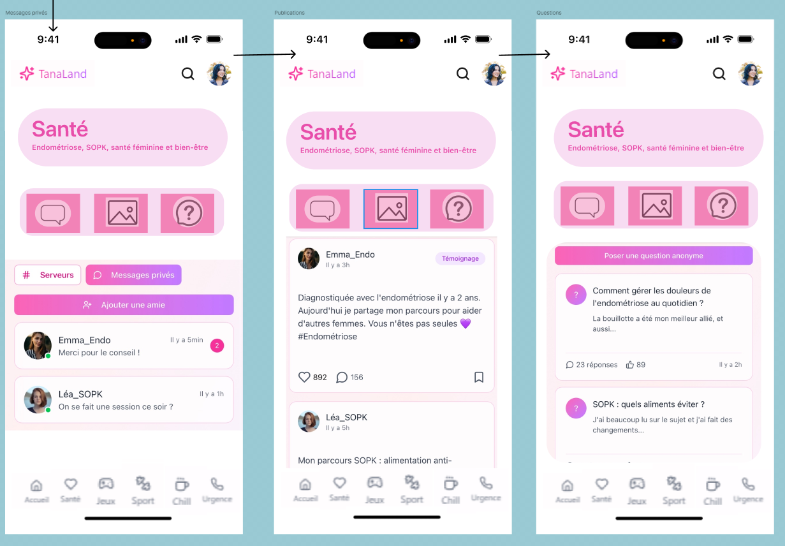
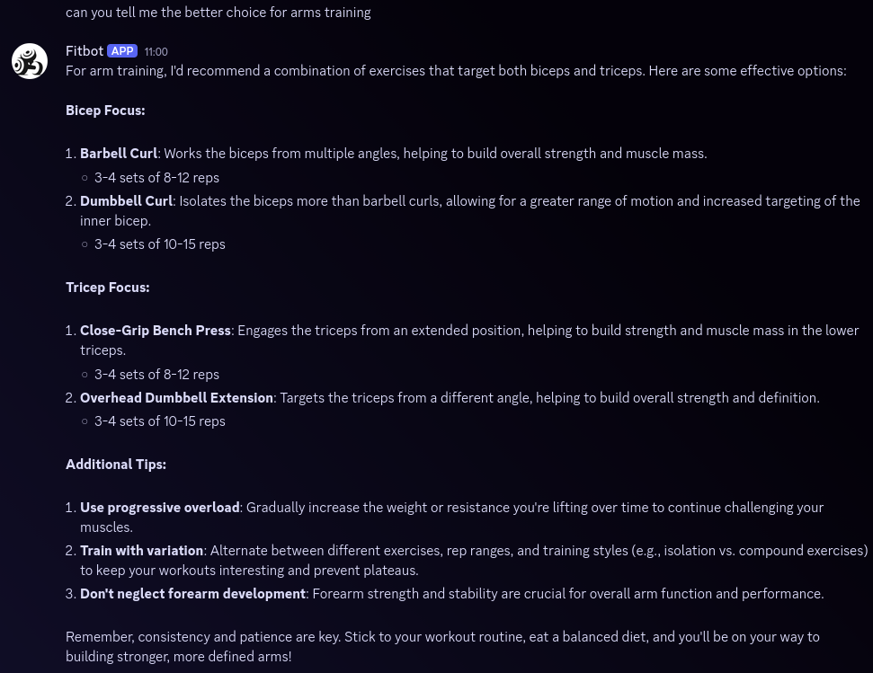
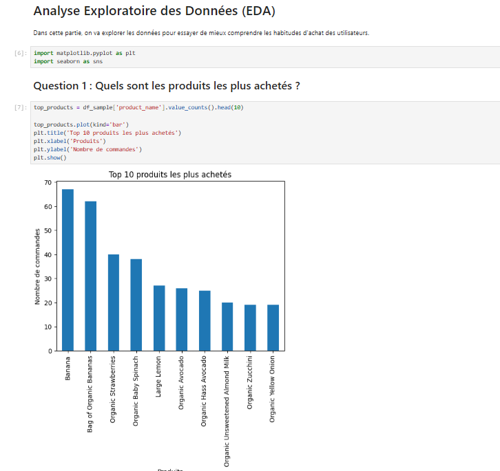
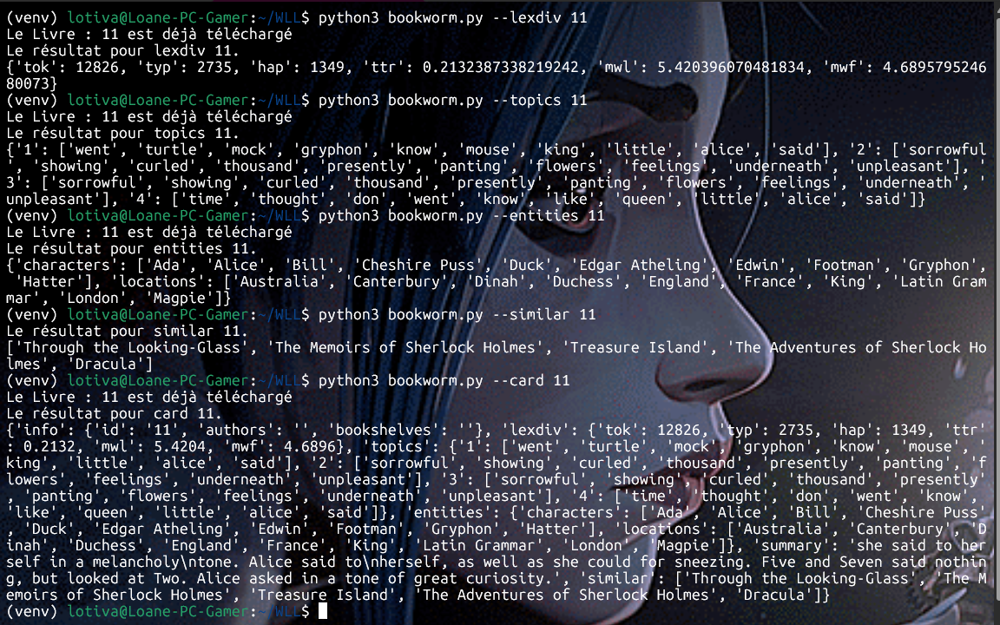
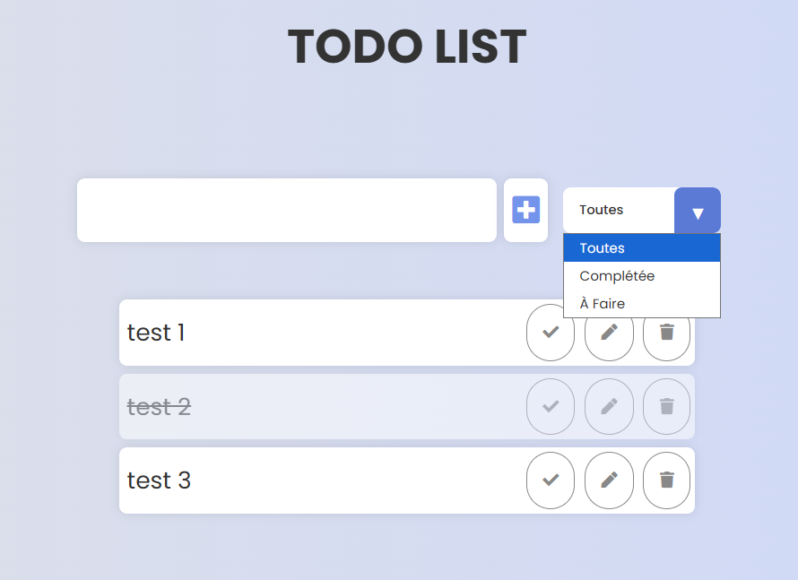
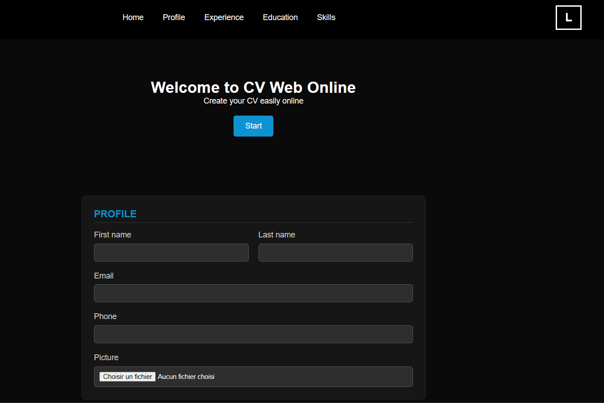

Des projets académiques et créatifs qui illustrent ma progression et mes compétences à travers différents domaines du développement.
Projet phare du portfolio : une application sociale pensée pour les femmes, de la recherche utilisateur. Interviews, personas, wireframes Figma, prototype cliquable, tests utilisateurs et développement d'une interface web fonctionnelle.
Ce projet illustre une démarche produit complète : identifier un problème réel, concevoir une solution centrée sur l'utilisateur, itérer sur les retours, puis développer.
Voir sur GitHub
Conception et développement d'un chatbot à vraie valeur ajoutée pour les entreprises. Stratégie marketing, analyse KPIs et ROI, landing page de présentation et démonstration live sur une plateforme de messagerie.
Voir sur GitHub
Analyse exploratoire de millions de commandes d'un magasin alimentaire. Identification de comportements d'achat, segmentation client, construction et comparaison de modèles prédictifs avec visualisations avancées.
Voir sur GitHub
Outil en ligne de commande pour analyser des œuvres littéraires via Project Gutenberg : résumé automatique, modélisation de sujets (LDA/LSA), reconnaissance d'entités nommées et calcul de similarité entre livres.
Voir sur GitHub
Application de gestion de tâches complète : API REST sécurisée avec JWT, base de données MySQL, interface responsive et conteneurisation via Docker Compose. Backend Node.js.
Voir sur GitHub
Premier projet fullstack : résumé numérique dynamique avec backend PHP, base MySQL et Docker. Point de départ de ma progression en développement web.
Voir sur GitHub
Bientôt disponible